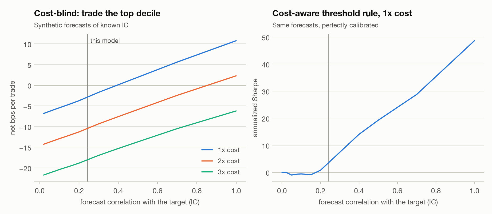
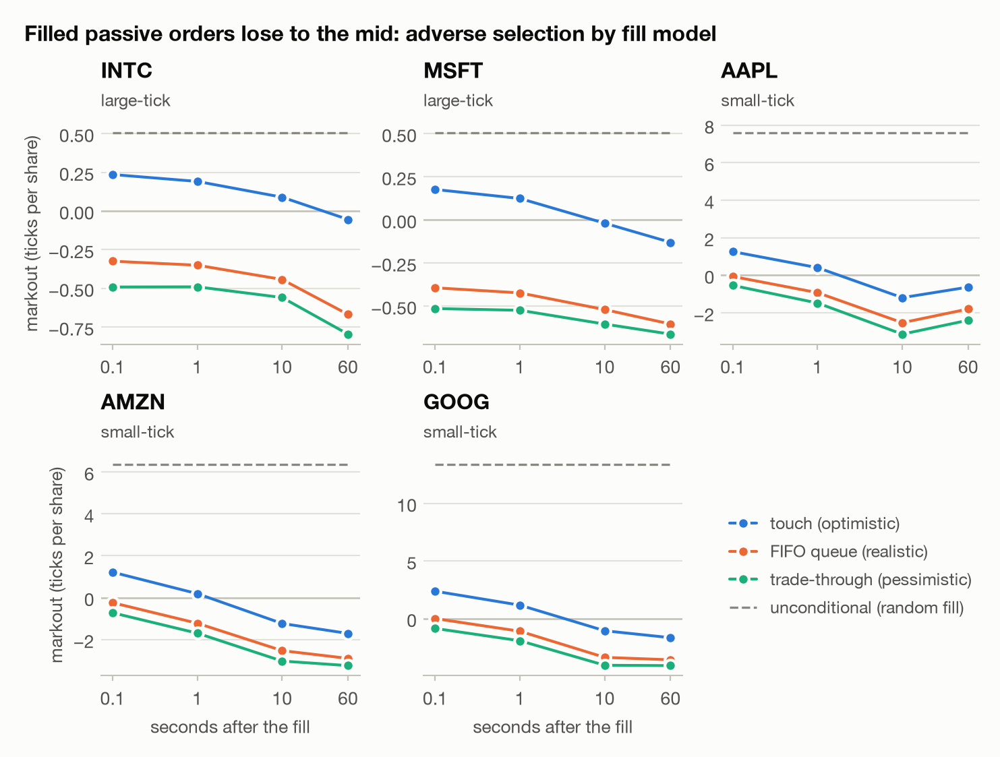
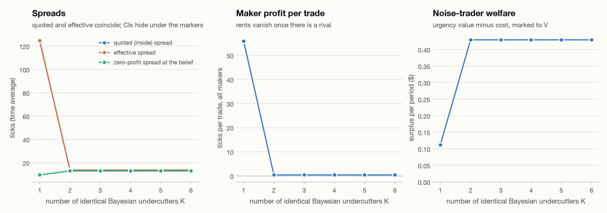
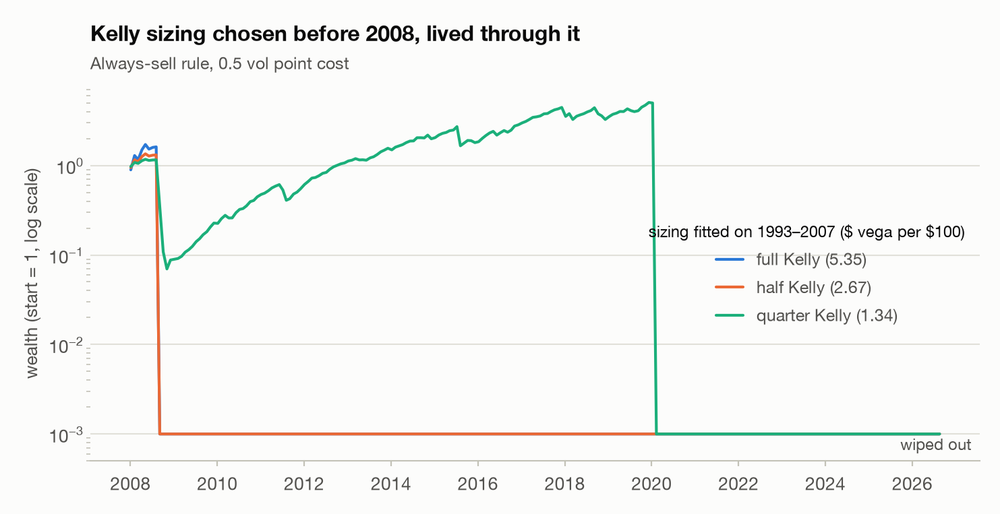
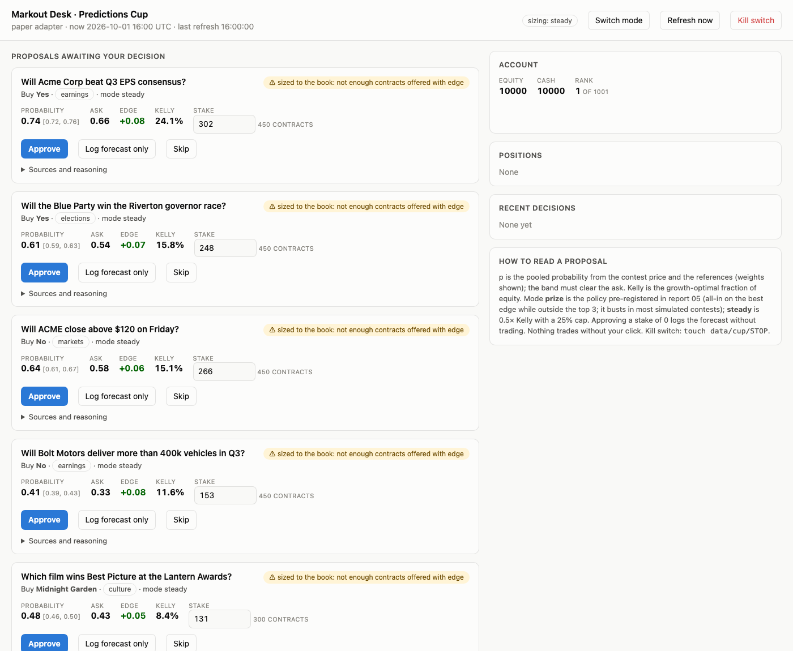

Markout
Does a short-horizon trading edge survive the spread, realistic fills, competing traders, and the bias that comes from trying many strategies? These are the results of trying to find out, mostly on real market data.
What came out of it
Closing auction
LightGBM beats a per-stock baseline on every walk-forward day. Traded net of costs it earns an annualized Sharpe of 4.8, and 4.7 on a holdout scored once. At twice the assumed costs it drops to -0.2: the edge is about one spread wide.
Realistic fills
Resting orders in INTC look profitable if any trade at your price fills you (+0.33 bps ten seconds later). Tracking queue position order by order turns that into -1.64 bps: the fills you actually get are the ones the market was about to run over.
Competition
A lone market maker quotes a 124-tick spread; one identical rival brings it to 13.8, next to the zero-profit level of 13.0. Competition removes the rent, not the cost of informed traders.
Volatility premium
VIX sat above the volatility that followed 86% of the time since 1990. But the mean/variance Kelly formula asks for 3.0x the growth-optimal size, and every Kelly fraction fitted on 1993–2007 was wiped out after 2008.
C++ core
The order-book replay was ported to C++17: 26–47x faster than Python, with identical fills on every test.
A few figures




Play: make a market on five hidden cards
Five cards are dealt face down from a standard deck (A = 1 to K = 13). Quote a bid and an ask on their sum, at most four apart. Three bots trade against you each round: some know one of the hidden cards and only trade when your quote is wrong, the rest trade at random. One card is turned up after every round, and every trade settles at the final sum. After each round the game shows the best estimate given everything you have seen, and at the end it replays the same cards and bots with two scripted quoters so you can compare.
The Predictions Cup desk
SIG's student prediction contest allows bots. The desk pools free reference prices (Polymarket, Kalshi, option-implied probabilities, earnings history) with the contest's own price, proposes trades sized by Kelly and by what the order book can fill, and never trades without a click. Open a read-only snapshot or read the walkthrough.
